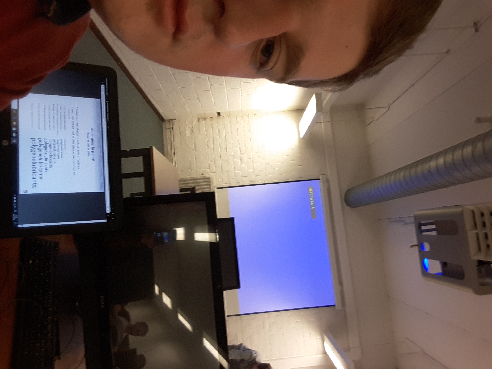
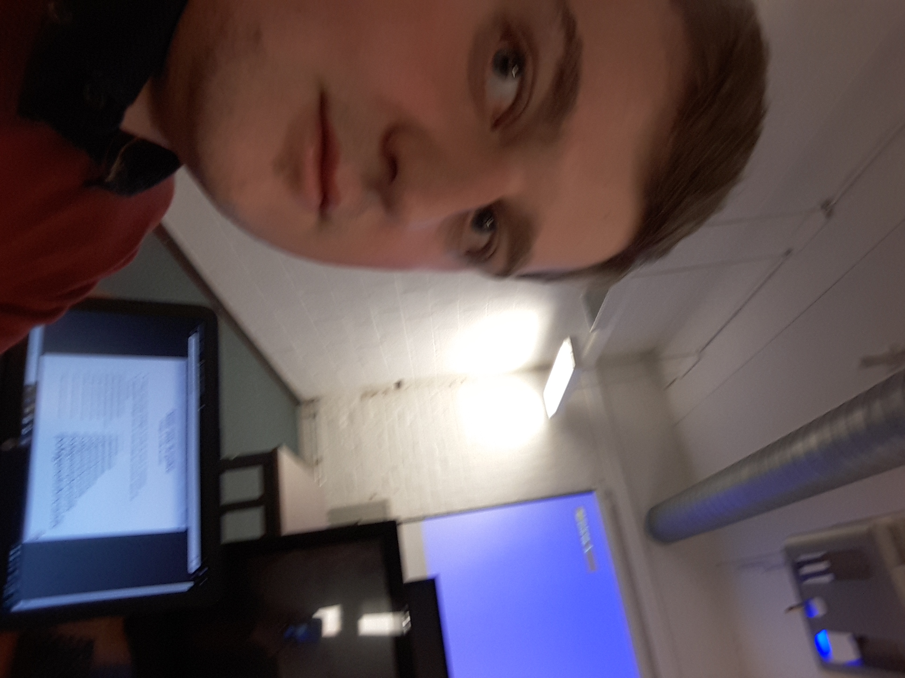
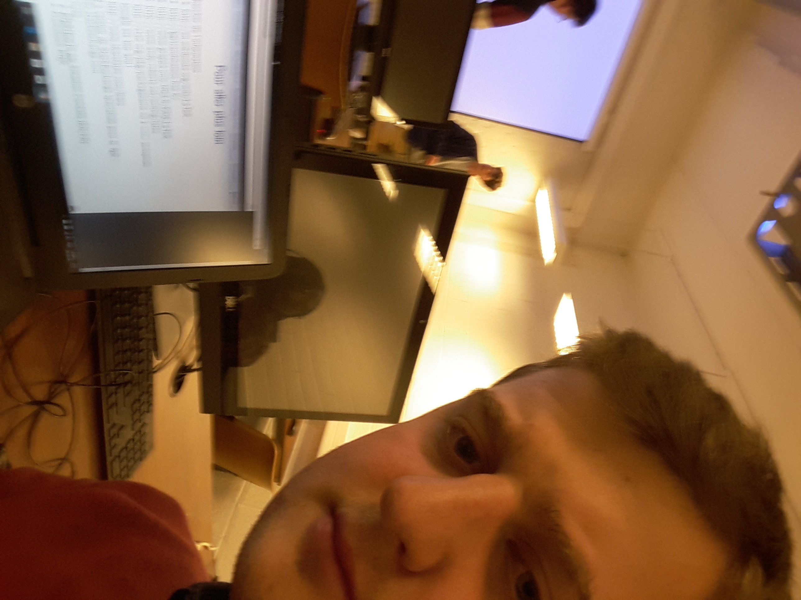

La formation LaTex nous a été donné par Louvain-linux au local de
CANDIX de l'UCLouvain.
Nous avons appris grâce à la théorie des slides projetés et de
pratique sur le site Overleaf, éditeur de documents en LaTeX.
Ce langage permet d'écrire de très beaux documents scolaires,
professionnels et scientifiques.
J'avais déjà eu une présentation sur le langage LaTeX il y a 5 ans
lors de ma première année de bachelier en Sciences informatiques à
l'UCL.
Il m'a permis de faire de nombreux rapports donc je trouvais
intéressant de le revisiter pour renouveller mes pratiques de
celui-ci.


